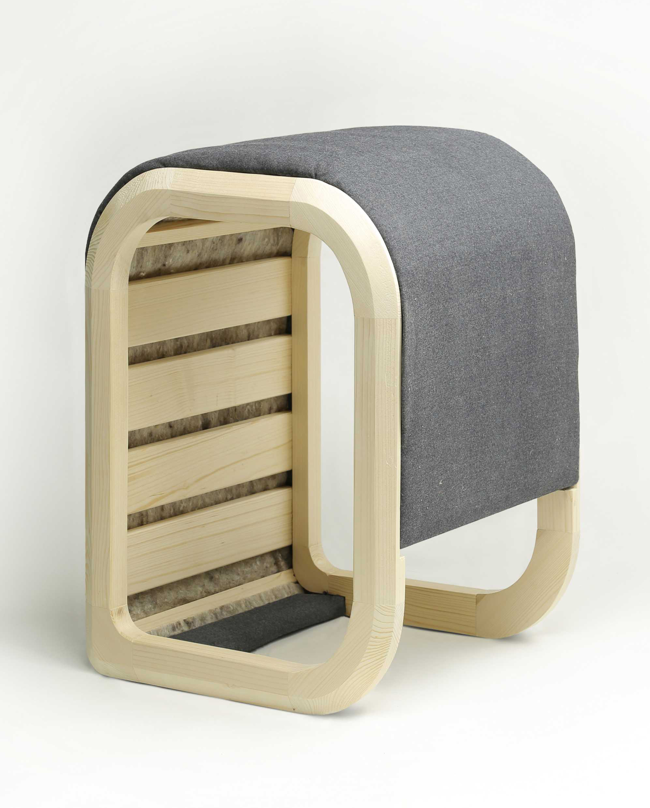
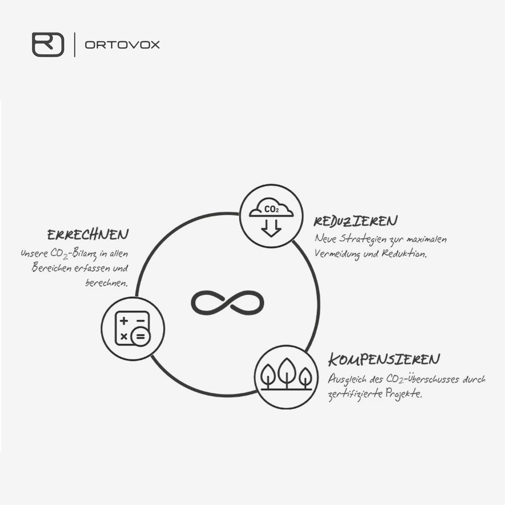
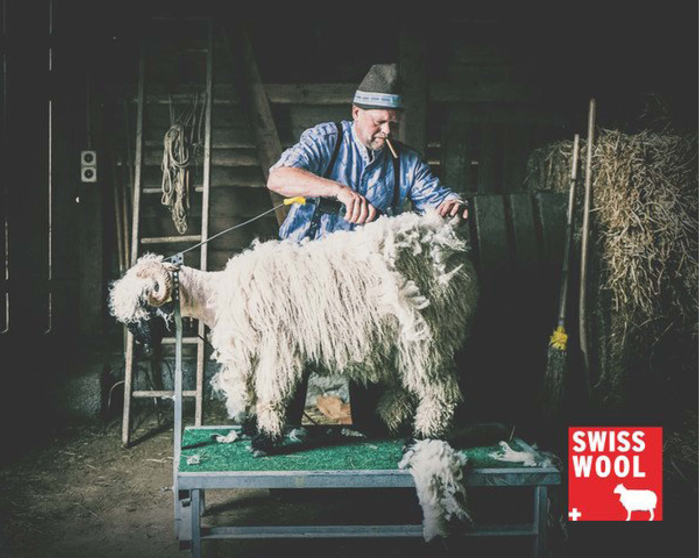
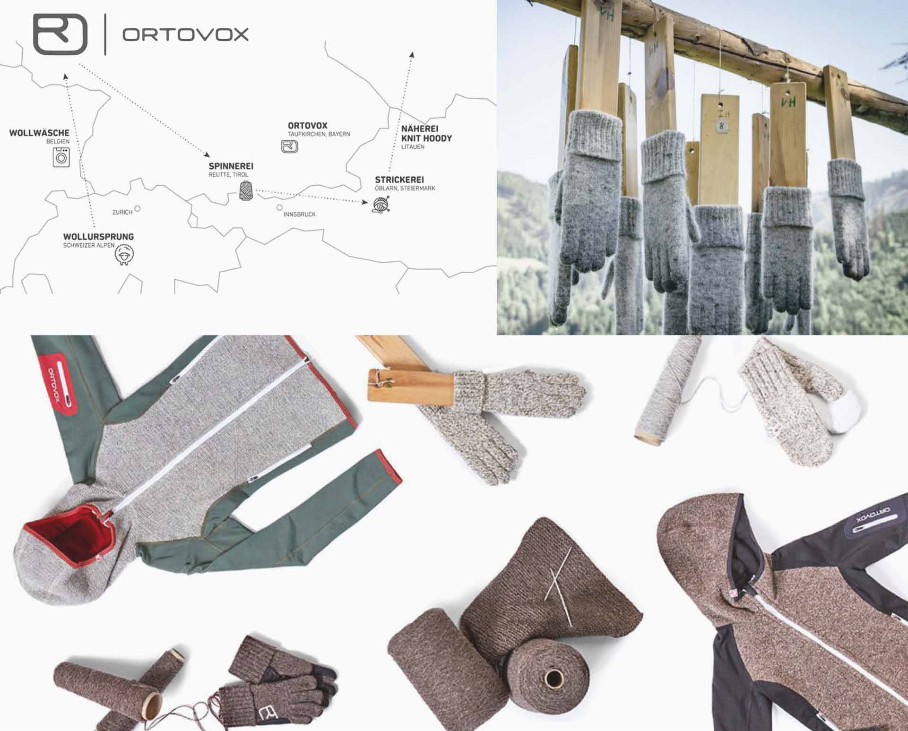
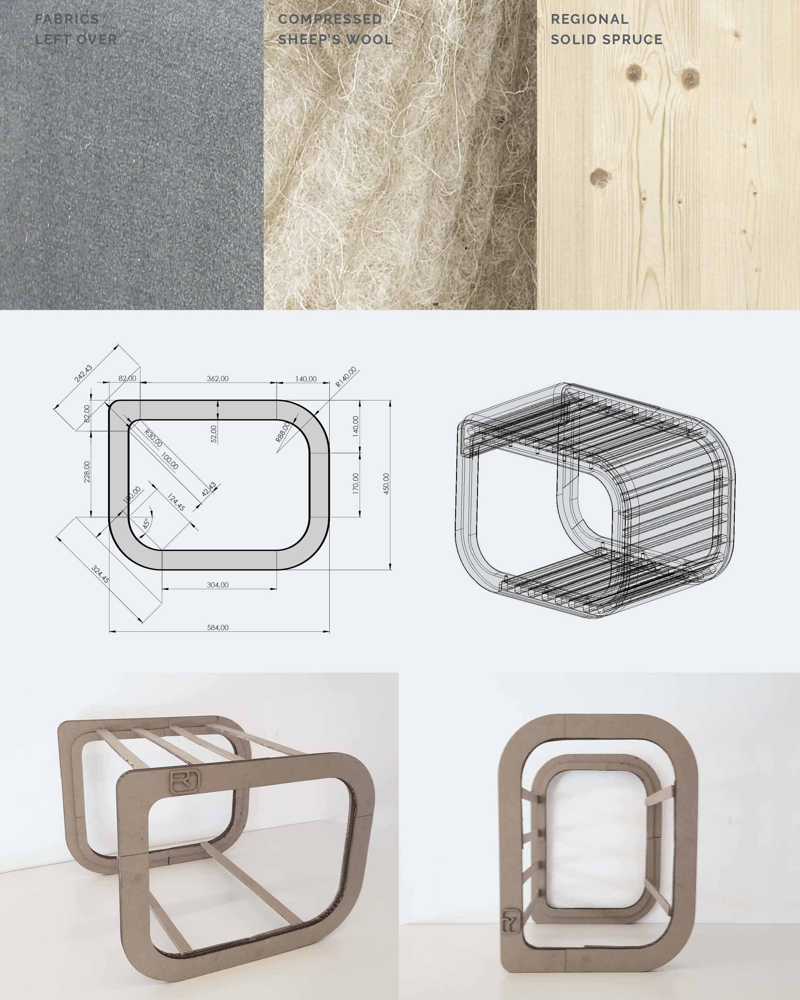
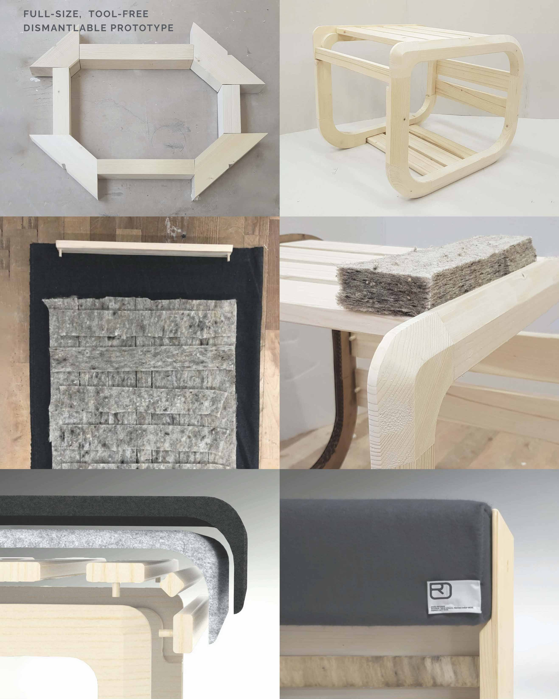
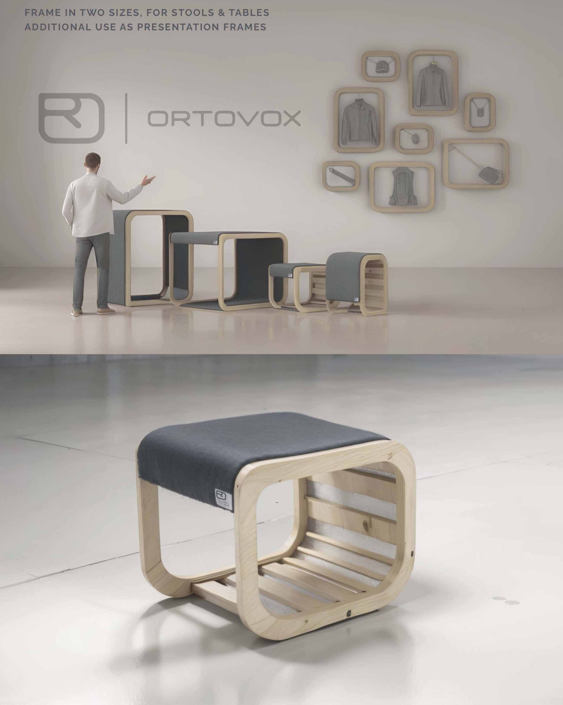
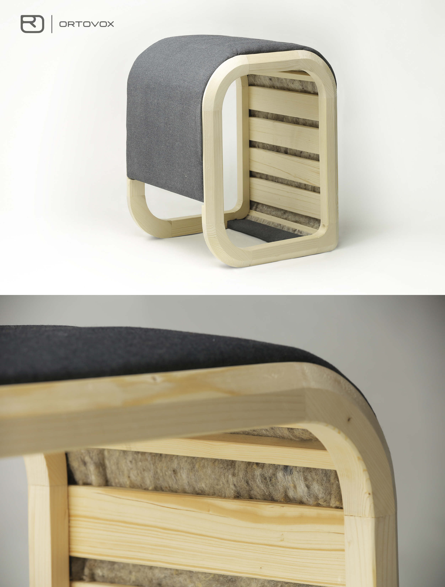
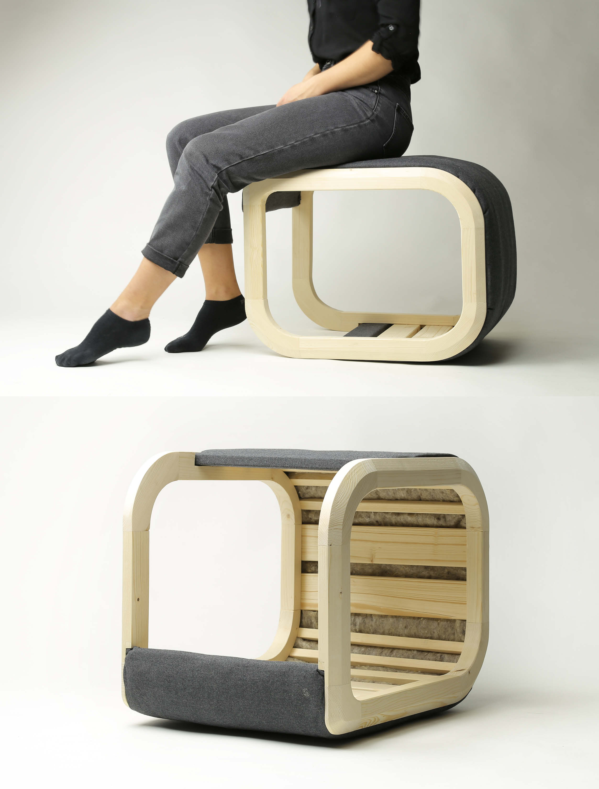
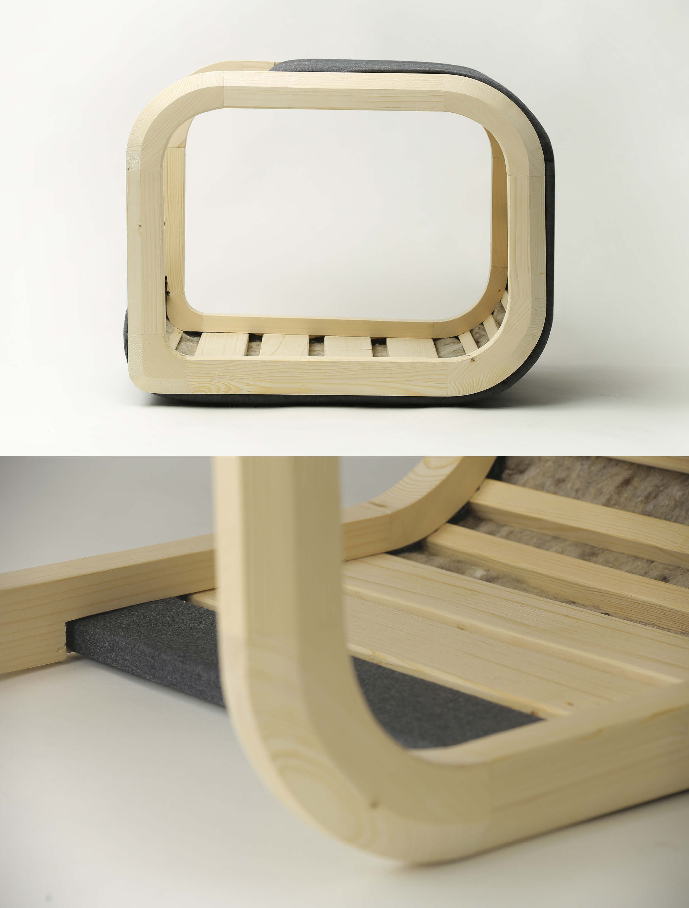

08 / 2019
Ortovox
Reframe
Modular, multifunctional, and sustainable exhibition furniture for the outdoor clothing brand Ortovox.
- Year
- 2019
- Context
- Ortovox Sportartikel GmbH, in collaboration with Mara Regenfelder
- Duration
- Four months
- Practice
- Idea and concept development, Eco-design, Sustainable furniture, Mockup building, Visualizations, Project coordination with client

Concept
Commissioned by Ortovox, the project designs furniture for a sustainable trade-fair booth: individually usable frames, joined by plug connections and easy to take apart.
Each frame consists of only three materials: wood, pressed sheep wool instead of foam as padding, and fabric remnants from Ortovox production as upholstery.
The frames come in two sizes and can be mounted on a wall to present Ortovox products. The smaller size can be plugged together into a stool, and the larger size has the ergonomic dimensions of a presentation table.

How can exhibition furniture showcase products while enhancing sustainability? How can modular design and upcycled materials make it more resource-efficient?

Swiss wool is vital to Ortovox for its thermal properties and climate control. Sourcing it locally supports sustainability and regional economies.

The Ortovox USP is sustainability and locality: high-performance outdoor gear made from natural materials, from technical apparel and insulation layers to safety equipment.





